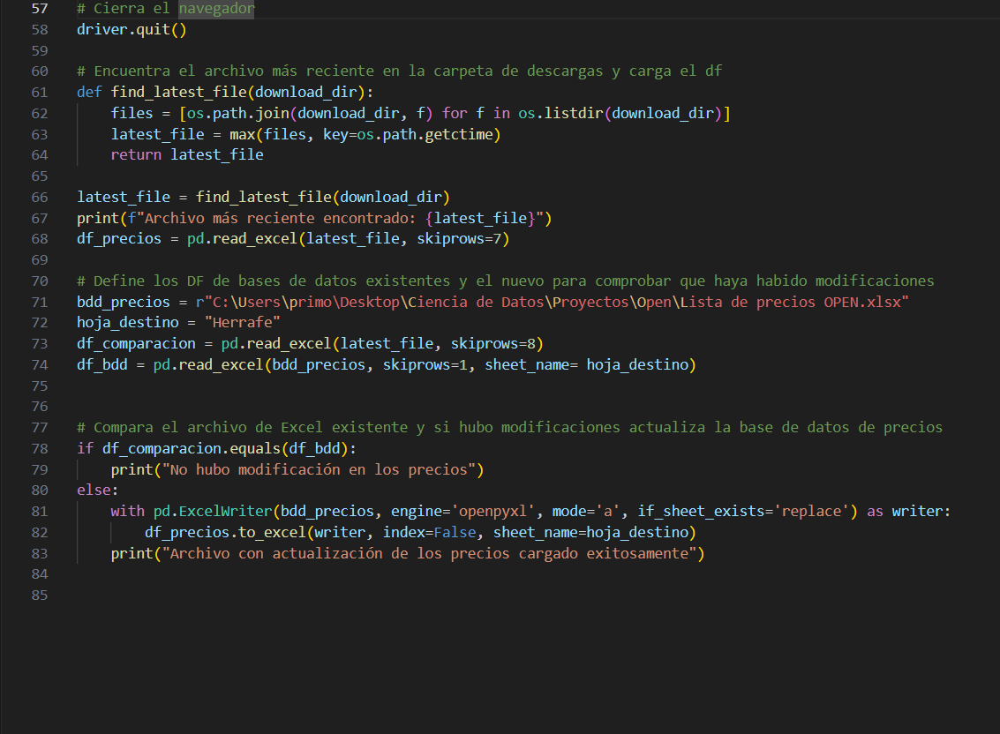

Resumen del Proyecto
En este proyecto automaticé dos procesos clave para una cerrajería: la actualización de precios y la extracción de información del catálogo del proveedor. Para eso desarrollé un proceso ETL que descarga el catálogo Excel desde un sitio de acceso restringido, calcula los precios de venta según el medio de pago mediante fórmulas en Excel, y actualiza la base local comparando versiones con Python. Además, mediante Selenium y pandas, extraje automáticamente información adicional (nombre, imagen, características y URL) recorriendo dinámicamente el sitio web. Ambas soluciones se integraron para permitir la carga eficiente y sin intervención manual del catálogo completo en la aplicación de gestión desarrollada con AppSheet.
Desarrollo del proyecto
El primer objetivo del proyecto fue automatizar la descarga del catálogo de precios base, eliminando tareas manuales que consumían mucho tiempo y eran propensas a errores, lo que permitió aumentar la eficiencia y confiabilidad en la gestión del inventario. Para lograr esto, desarrollé un script en Python que simula la interacción humana usando la biblioteca Selenium, accediendo al sitio web del proveedor, que tiene un sistema de login restringido exclusivo para clientes autorizados. El script navega automáticamente, completa los campos de usuario y contraseña, y descarga el archivo de catálogo en formato Excel, el cual contiene únicamente los precios base de los productos. Este enfoque garantiza que el proceso de obtención de datos sea totalmente automático y confiable, sirviendo como punto de partida para el procesamiento y actualización posterior.

A partir de ese momento, realicé un proceso minucioso de verificación y actualización para asegurar que la base local de la cerrajería siempre refleje los precios correctos. Utilicé la biblioteca pandas para cargar el archivo recién descargado con los precios base y compararlo con la base local, que consiste en un archivo Excel propio que contiene no solo los datos sino también las fórmulas para calcular los precios según el medio de pago. La comparación detecta diferencias en los productos o en los precios base, y solo si se identifican cambios reales, se procede a actualizar la base local usando ExcelWriter, manteniendo intacta la estructura y las fórmulas dinámicas. Esta estrategia garantiza un proceso replicable, eficiente y robusto, que elimina la necesidad de intervenciones manuales y reduce significativamente el riesgo de errores humanos, manteniendo el inventario siempre actualizado y confiable.
El objetivo final fue enriquecer la base de datos con información adicional que no estaba disponible en el archivo Excel original. Para ello, diseñé un crawler automatizado usando Selenium que navega dinámicamente a través de las 22 páginas que componen el catálogo online del proveedor. Dado que el sitio utiliza contenido generado mediante JavaScript para cargar dinámicamente los elementos de la página, opté por esta herramienta que controla un navegador real, permitiendo acceder y extraer toda la información visible con alta precisión. En cada página, el crawler identifica y extrae elementos HTML específicos que contienen datos clave como el nombre del producto, la URL de la imagen, las características y otros detalles relevantes. Esta información se procesa posteriormente con pandas para limpiar, estructurar y normalizar los datos en un DataFrame consistente, que luego se exporta en un formato compatible con la plataforma AppSheet, utilizada para la gestión del catálogo en la aplicación final. Este proceso garantiza que el catálogo esté no solo actualizado en precios, sino también enriquecido con información visual y descriptiva que mejora la experiencia de gestión y presentación de los productos.
1. Automatización de login y descarga
El proceso comienza con la automatización del ingreso al sitio web del proveedor, el cual requiere autenticación mediante usuario y contraseña. Se desarrolló un script en Python utilizando Selenium para simular la navegación y el comportamiento de un usuario humano: apertura del navegador, ingreso de credenciales y acceso a la sección privada donde se encuentra el catálogo actualizado de precios base.
Una vez dentro, el script localiza y descarga el archivo Excel correspondiente, que será utilizado como insumo para las etapas siguientes del proceso. Esta automatización reemplaza una tarea rutinaria que antes debía realizarse manualmente, garantizando rapidez, precisión y mayor trazabilidad sobre el origen de los datos.
2. Actualización de base de datos
Con el archivo descargado, se lo compara con la base de datos local para identificar posibles cambios en los precios base. Esta comparación es necesaria porque el archivo local de la cerrajería no solo contiene los datos históricos, sino también las fórmulas que calculan automáticamente los precios finales según el medio de pago. Por eso, no puede sobrescribirse sin antes validar que haya actualizaciones reales.
Para llevar a cabo esta verificación se utiliza pandas, cargando ambos archivos como DataFrames y evaluando diferencias estructurales y de contenido. En caso de que se detecten modificaciones, se reemplaza únicamente la hoja correspondiente mediante ExcelWriter, preservando así el resto del archivo, incluida la lógica de cálculo. Esto garantiza un proceso eficiente, preciso y con mínima intervención manual.
3. Extracción web de atributos clave
El archivo Excel descargado no incluye información visual ni descriptiva de los productos, por lo que se desarrolló un proceso complementario de extracción web para enriquecer el catálogo. Usando Selenium, se automatizó la navegación por las 22 páginas del sitio del proveedor, que carga los productos dinámicamente con JavaScript. Esto requiere controlar un navegador real para poder acceder a todos los elementos visibles en pantalla.
Durante el recorrido, el script identifica y extrae de cada producto atributos clave como el nombre, la imagen, características técnicas y la URL del producto. Esta información se captura con selectores CSS, se almacena en listas y luego se transforma en un DataFrame limpio con pandas. El resultado es una tabla enriquecida y estructurada, lista para integrarse con la base principal y mejorar significativamente la calidad del catálogo final.
4. Preparación final e integración
Una vez completado el scraping y organizada la información adicional, se combinan los datos obtenidos para generar archivos listos para ser utilizados por la herramienta de gestión. En esta etapa se realiza una limpieza final del DataFrame, asegurando la integridad de campos como nombre, imagen y características, y se filtran únicamente los productos con los que trabaja la cerrajería. Luego, se preparan los archivos en formato Excel con la estructura necesaria para la carga en AppSheet.
Este paso cierra el flujo de trabajo permitiendo que toda la información —tanto de precios como de atributos visuales— esté actualizada y enriquecida dentro del sistema. Gracias a este proceso automatizado, se elimina la necesidad de actualizar manualmente el catálogo en la aplicación de gestión, garantizando que los usuarios trabajen siempre con datos completos, precisos y de calidad.